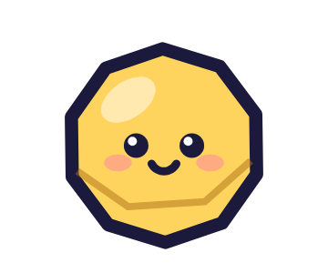
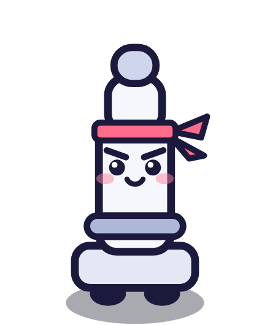
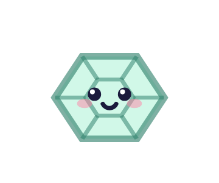

Collect your data
Stomp a sample and it drops gigabytes. Level up to earn a new holder, sharpen a skill or fit a module to your microscope.
A microscopy platformer
You’re an electron microscope.
You have a thesis to defend.
Pick your instrument, collect data and take on Reviewer #2 in a five-year PhD adventure.
Play Beam TimeFree in your browser · Keyboard or touch

Field guide

Stomp a sample and it drops gigabytes. Level up to earn a new holder, sharpen a skill or fit a module to your microscope.
The Qualifying Exam carries a red pen. Get past it and you’ll meet a too-thick lamella, Reviewer #2 and the Thesis Committee.

Open TEM 101 in the game lobby for a narrated tour down the column and 15 interactive lessons, from diffraction to beam damage.
Controls
On a phone or tablet, use the on-screen controls. Your run saves at checkpoints in this browser.